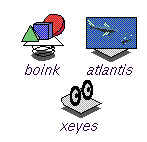
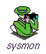

AccessX |
The SGI AccessX graphical interface lets movement-impaired users set and activate the following five special keyboard features:
|
|
| Array Services | Array Services is a set of tools with kernel support that simplify the management of systems and parallel applcations for clusters of SGI systems. | |
| Color Management | The Color Management software contains libraries (supplied as DSOs), utility programs to apply color corrections (cocostiff(1), cocojpeg(1), cocogif(1), etc.), and International Color Consortium (ICC) color profiles for selected devices. Other applications rely on this product. | |
| Customer Support Services | Includes:
|
|
| Demonstration Programs | Cool demos to show off your system to your friends! You can launch them from the Demos page of the Icon Catalog. These are located on the two demos CD. |  |
| Desktop System Monitor | System Monitor is an error reporting system for the IRIX Interactive Desktop. You can find an icon for it on the Support Tools page of the Icon Catalog. |  |
| IndigoMagic MediaWarehouse | Media Warehouse provides viewers for ASCII text, HTML, 3D models (Inventor(TM) and VRML), audio (AIFF, AIFC, NeXT/AU, and WAV formats), movies (SGI Movie, MPEG, and QuickTime® formats), IL image (see imgformats(1)), and X image (XPM and XBM) data types. Several desktop products rely on this product. | |
| License Tools | The License Tools support the installation and management of software licenses and can be run interactively or automatically. This product should be installed on systems running licensed applications (it is preinstalled on most SGI systems). You can launch this tool from the System menu on the Toolchest. | |
| Performer | OpenGL Performer is a powerful and comprehensive programming interface for developers creating real-time visual simulation and other professional performance-oriented 3D graphics applications. The toolkit simplifies development of applications used for visual simulation, simulation-based design, virtual reality, interactive entertainment, broadcast video, architectural walk-through, and computer aided design. The latest major release, OpenGL Performer 2.5, is built atop the industry standard OpenGL graphics library, interoperates with OpenGL Shader, OpenGL Optimizer, OpenGL Volumizer, and OpenGL Vizserver, includes both ANSI C and C++ bindings, and is available for both the IRIX operating system and GNU/Linux®. |
|
| WebViewer | A Viewkit HTML viewing component. Other desktop products rely on this product. |